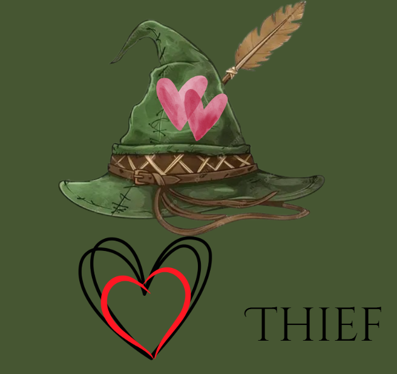
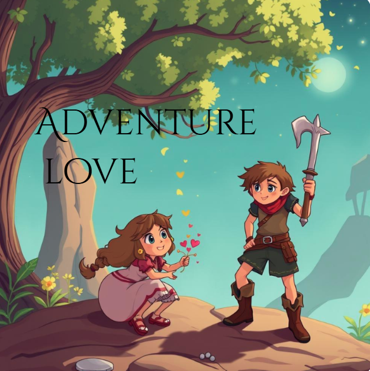
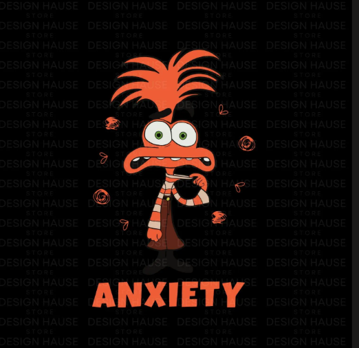

The words We/I never spoke
About this series
These poems hold the feelings and thoughts my heart wanted to express, but never had the chance to say aloud. I began writing when my best friend was offline and I had no one else to share my feelings with.
I had written poems for fun and school competitions in high school, but I never imagined that writing would help save me, comfort me, and keep me grounded. We all go through difficult things, and love can leave us feeling miserable, sad, or overwhelmed—but it can also make us happy, help us see beauty, and give us strength.
This series is not here to make you feel sad. It is a space for my feelings and thoughts, and for the words some of us struggle to say: the truths we avoid and the things we never thought we could admit. These poems give those feelings a place to be heard.
Poems to read




About me
Stories told through emotion.
This collection reflects the realities of personal growth, quiet pain, and the meaningful moments that shape a life. Every page is a place where feelings become words.
“I write for the broken, the hopeful, and everyone in between — to remind them they are never as alone as they think.”
Leave a Comment